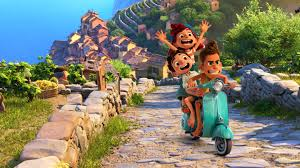

The movie is about sea monsters and land monsters who are normal human.So after seeing all the stuffs from boats and ships.He went on the shore and found a friend and went on crazy adventures together.In the end the land monsters accepted the sea monsters for who they were.
In my own opinion the movie helps children know that being different is very unique and good.It is a very interesting and nice movie.